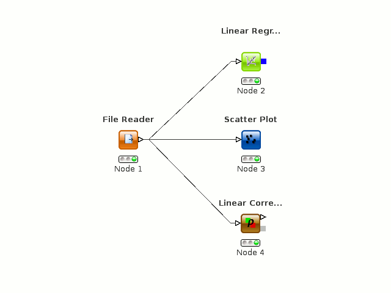
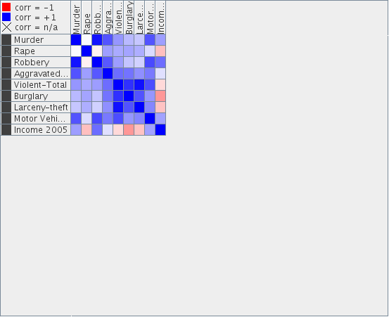
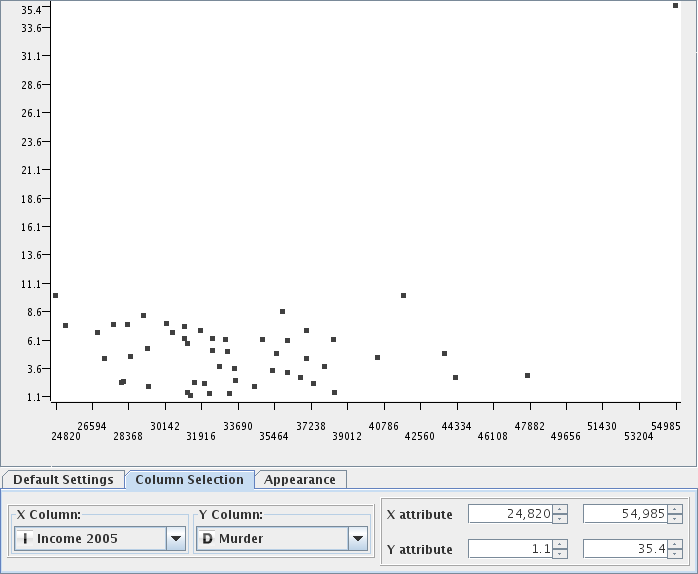
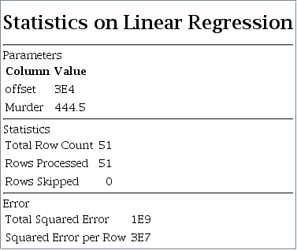

Finding a correlation between Crime and Income
Dataset
The dataset chosen involved crime data from all 50 states and the District of columbia. The dataset from the crime was gained in the from of a Comma Seperated File (CSV) posted by infochimps.org. The data on the average income by state was posted by infoplease.com
Crime Data
Income Data
Toolset Used
The toolset that was used was KNIME which can be downloaded
here. The layout node structure looked like the following.

Some Python code was used to make the state income information more readable. That is below
inFile = open('income', 'r')
outFile = open('newOutput', 'w')
for line in inFile:
temp = line.split("\t")
newOut = temp[0] + " ," + temp[7].strip("$") + "," + temp[8].strip("$")+"\n"
newTemp = temp[0] + " ,"
for c in temp[7]:
if c != '$' and c != ',':
newTemp += c
newTemp += ","
for c in temp[8]:
if c != '$' and c != ',':
newTemp += c
newTemp += "\n"
outFile.write(newTemp)
Dataset Documentation
The documentation for both of the datasets is very clear. With the income data everything is clearly stated. The data provided by infochimps was also extremely clear. The folder available to download included a README & a YAML file that included everything needed including where the information was collected from.
Project Goal
The goal of this project was to see if there was a link between income and crime.
Data Exploration
The initial summary statistics show the range and average crime for the country. All figures are the amount of crimes per 100,000 people.
Violent Crimes: Murder, Rape, Aggravated Assault
Property Crimes: Larceny-Theft, Burglary, Motor Vehicle Theft
| Violent Crimes: | Property Crimes: |
| Min: 98.2 | Min: 1776.4 |
| Max: 1459 | Max: 4893 |
| Mean: 422.3431 | Mean: 3377.1902 |
The following is the correlation matrix for all the crimes:

Snapshot
The following is a snapshot of the linear regression as well as the scatterplot when comparing just murder to income.
Scatterplot:

Regression:

Difficulties
The main difficulties were formatting the data and getting it into KNIME, and learning KNIME in general. The data formatting was fairly straightforward using a simple python script and formatting the data in OpenOffice. Learning KNIME was fun and fairly easy to get. After that the project was fairly straight forward with getting the usefull information out.
Conclusion
Overall this project was very fun and a good way to learn the toolkit. KNIME was a very good toolkit and I will most likely use it in the future. It is fairly easy and is very good to pick it up and start working.
The future work would include trying to see if there is a corelation between other population things such as race or gender. Trying to correlate between weather, such as average rainfall in a state, and crime.